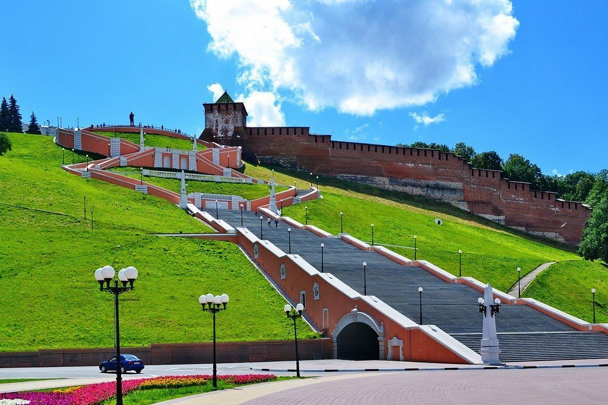

Нижегородский кремль ни разу не был взят врагом за всю многовековую историю.
Чкаловская лестница долгое время считалась самой длинной в стране.
У памятника Валерию Чкалову есть забавная «тайна третьей ступени».
Озеро Светлояр — здесь находилась русская «Атлантида» — град Китеж.
Нижегородский планетарий считается передовым в плане оснащения и технологий в России.
Музей-квартира Горького — в Нижнем есть свой дом с привидениями.
Нижегородский государственный художественный музей — здесь находится одно из самых масштабных произведений русской станковой живописи.
Керженский заповедник — единственный заповедник в Нижегородской области.